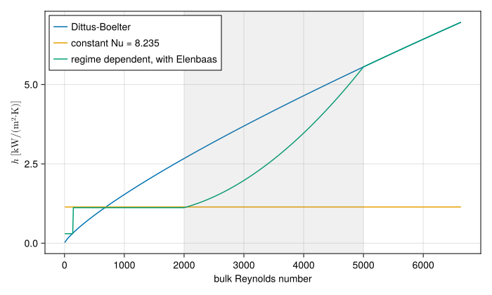
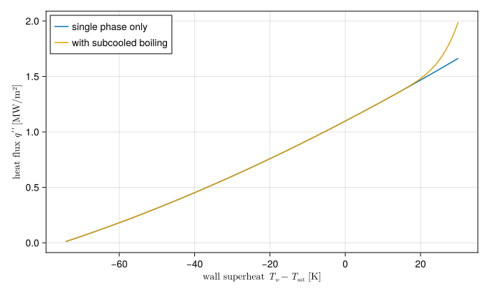

Wall heat transfer
Heat leaves a fuel plate or rod through its surface into the coolant. The rate is set by the heat transfer coefficient $h$, defined by Newton's law of cooling,
\[q'' = h\,(T_w - T_b),\]
with $q''$ the heat flux through the wall, $T_w$ the wall surface temperature and $T_b$ the bulk coolant temperature. Correlations give $h$ through the Nusselt number $\text{Nu} = h\,D_h/k$, a function of the flow (Reynolds number), the fluid (Prandtl number) and, for natural convection, buoyancy (Grashof or Rayleigh number).
In STREAM, a heat transfer model is an AbstractHTC, a callable
htc(T_wall, T_bulk, ṁ, Dh, A, liquid) -> hthat a ChannelAndContacts evaluates per cell and per face. Anything a correlation needs beyond these (the geometry, gravity, a transition band) it captures when it is built. This page describes the models STREAM ships and the physics behind them, using Python STREAM's names for the regimes: single-phase liquid (SPL), incipience of boiling (INC) and subcooled boiling (SCB).
What the coefficient is
The coolant touching the wall does not move: viscosity holds it at rest. Heat crosses that layer by conduction alone, so Fourier's law at the wall gives the flux exactly,
\[q'' = -k\,\frac{\partial T}{\partial y}\bigg|_{y=0},\]
with $y$ the distance from the wall into the coolant. All of convection is in how steep that gradient is: the flow sweeps cool liquid towards the wall and keeps the layer thin. Newton's law of cooling, $q'' = h\,(T_w - T_b)$, does not add physics. It defines $h$ as the flux per degree of difference between the wall and the mixed bulk, and the Nusselt number is the same wall gradient made dimensionless with the hydraulic diameter:
\[\text{Nu} = \frac{h\,D_h}{k} = \frac{-\,\partial T/\partial y|_{0}}{(T_w - T_b)/D_h}.\]
The equations of motion and energy, made dimensionless, contain only three groups for a forced flow: the Reynolds number $\text{Re} = \rho v D_h/\mu$, the ratio of inertia to viscous forces; the Prandtl number $\text{Pr} = c_p\mu/k$, the ratio of momentum to heat diffusivity; and the geometry. So in forced convection $\text{Nu} = f(\text{Re}, \text{Pr})$ for a given shape of duct, and every correlation below is such a function, fitted to experiments or found by solving the equations.
Single-phase forced convection
Turbulent flow. HTC.DittusBoelter uses the Dittus-Boelter correlation in its heating form (Dittus and Boelter, 1930),
\[\text{Nu} = 0.023\,\text{Re}^{0.8}\,\text{Pr}^{0.4},\]
fitted for $\text{Re} > 10^4$, $0.6 \le \text{Pr} \le 160$ and fully developed flow, $L/D_h > 10$.
Its form follows from the analogy between momentum and heat transfer. In turbulent flow the same eddies carry momentum to the wall and heat away from it, so the wall heat flux and the wall shear stress are proportional. Colburn's form of the analogy, for $\text{Pr}$ near 1 and above, is
\[\text{St}\,\text{Pr}^{2/3} = \frac{f}{8}, \qquad \text{St} = \frac{\text{Nu}}{\text{Re}\,\text{Pr}},\]
and with Blasius' $f = 0.3164\,\text{Re}^{-1/4}$ it gives $\text{Nu} = 0.040\,\text{Re}^{3/4}\,\text{Pr}^{1/3}$, close to the fitted exponents of Dittus and Boelter. It is the standard choice in research reactor analysis. Its scatter against data is commonly quoted as ±25%, it was fitted to circular tubes, and it is used for narrow rectangular channels through the hydraulic diameter, so its uncertainty belongs in the hot channel factors (see Margins). Below $\text{Re} = 10^4$ it overpredicts, which is why it should not be used alone near the laminar transition.
Laminar flow can be solved exactly. Far enough from the entrance, the velocity and the shape of the temperature profile stop changing along the duct, and the energy equation reduces to conduction across a known parabolic velocity profile. For parallel plates both heated at a uniform flux, solving it gives $\text{Nu} = 140/17 = 8.235$ on the hydraulic diameter, twice the gap (Shah and London, 1978). It is a constant: in laminar flow nothing carries heat across the flow except conduction, so a faster flow does not thin the wall layer. This is the default of HTC.ConstantNusselt. A rectangular duct of aspect ratio $\alpha = \text{depth}/\text{width}$ heated on its two long sides has a lower value, which HTC.FullyDevelopedLaminar takes from Shah and London's polynomial fit. Near the entrance of a heated channel the thermal boundary layer is still thin and the Nusselt number higher, which HTC.DevelopingLaminar follows as a function of the dimensionless distance $x^* = x/(D_h\,\text{Re}\,\text{Pr})$.
Property basis. A correlation is evaluated with the coolant properties at some temperature, and the choice changes $h$ because viscosity falls steeply with temperature. HTC.AtFilm reads them at the film temperature $(T_w + T_b)/2$, the usual choice for turbulent correlations. HTC.AtBulk reads them at the bulk, the usual choice for laminar ones. Every model takes a basis keyword.
Natural convection
With little or no forced flow, as after a pump trip, the coolant next to a hot wall rises because it is lighter. The buoyancy force per unit volume is $\rho g \beta\,(T_w - T_b)$, with $\beta$ the thermal expansion coefficient, and its ratio to the viscous force that resists the motion it starts is the Grashof number,
\[\text{Gr} = \frac{g\,\beta\,(T_w - T_b)\,L^3}{\nu^2}, \qquad \text{Ra} = \text{Gr}\,\text{Pr},\]
which takes the place of the Reynolds number: in natural convection $\text{Nu} = f(\text{Ra}, \text{Pr})$. Elenbaas measured natural convection between parallel vertical plates (Elenbaas, 1942), and his correlation, HTC.Elenbaas, uses the plate gap $b$ as the length scale:
\[\text{Nu} = \frac{1}{24}\,\text{Ra}\,\frac{b}{L} \left(1 - e^{-35\,L/(\text{Ra}\,b)}\right)^{3/4}.\]
For a narrow gap or a slow flow ($\text{Ra}\,b/L$ small) the exponential vanishes and $\text{Nu} \to \text{Ra}\,b/(24 L)$, the fully developed flow between the plates. For a wide gap it tends to $\text{Nu} \to (35^{3/4}/24)\,(\text{Ra}\,b/L)^{1/4}$, the boundary layer of an isolated vertical plate.
Choosing by regime
A channel that coasts down from forced flow to natural circulation passes through every regime. HTC.RegimeDependent chooses:
- by the bulk Reynolds number, between its
laminarandturbulentmodels, blending linearly across a transition band, 2000 to 5000 by default, so that $h$ stays continuous; - by buoyancy, switching to its
naturalmodel where $\text{Gr} > \text{Re}^2$, the usual criterion for buoyancy outweighing the forced flow. Gr and Re are both taken at the film temperature, with $D_h$ as the length, so that like is compared with like.
The switch to natural convection is a step, not a blend. A solver integrating through it sees $h$ jump, which it handles by taking smaller steps there.
The figure shows $h$ against flow for a plate-fuel channel, 2.4 mm by 67 mm and 0.6 m long, with the bulk at 40 °C and the wall at 60 °C.
using STREAM, CairoMakiegeom = PipeGeometry_rectangular(0.6, 0.067, 0.0024, 0.067)T_wall, T_bulk = 60.0, 40.0models = [ "Dittus-Boelter" => HTC.DittusBoelter(), "constant Nu = 8.235" => HTC.ConstantNusselt(), "regime dependent, with Elenbaas" => HTC.RegimeDependent(; laminar=HTC.ConstantNusselt(), turbulent=HTC.DittusBoelter(), natural=HTC.Elenbaas(geom), geom),]ṁ = range(1e-4, 0.15; length=600)Re_bulk = [Re(H2O, T_bulk, m, geom.A, geom.Dh) for m in ṁ]fig = Figure(size=(700, 420))ax = Axis(fig[1, 1]; xlabel="bulk Reynolds number", ylabel=L"$h$ [kW/(m²·K)]")for (label, model) in models h = [model(T_wall, T_bulk, m, geom.Dh, geom.A, H2O) for m in ṁ] lines!(ax, Re_bulk, h ./ 1e3; label)endvspan!(ax, 2000, 5000; color=(:gray, 0.12))axislegend(ax; position=:lt)fig
The shaded band is the laminar-turbulent blend. At the lowest flows, where buoyancy outweighs the forced flow, the regime-dependent model switches to natural convection. Here that gives a lower $h$ than the laminar constant: the switch is a choice of regime, not of the larger value, and it is the conservative one. HTC.Maximal takes the larger of several models instead, for a wall cooled by whichever mechanism wins.
Subcooled boiling
Past the Onset of nucleate boiling, bubbles at the wall carry heat away on top of convection, and the wall stays cooler than single-phase convection would make it. HTC.SubcooledBoiling adds this to any single-phase model with the partial boiling interpolation of Bergles and Rohsenow (Bergles and Rohsenow, 1964):
\[q'' = \sqrt{q''^2_\text{spl} + \big(q''_\text{scb}(T_w) - q''_\text{scb}(T_\text{ONB})\big)^2},\]
where $q''_\text{spl}$ is the single-phase flux and $q''_\text{scb}$ a fully developed boiling curve, a function of the wall superheat only. At the onset the second term is zero and the flux is single-phase. Far above it, boiling dominates and the flux follows the boiling curve. STREAM writes the same thing as a factor on $h$, so the channel's equations do not change form.
The boiling curve is McAdams' for turbulent flow (McAdams et al., 1949) and Rohsenow's pool boiling correlation for laminar flow (Rohsenow, 1952), blended across the same Reynolds band as the single-phase models by HTC.regime_dependent_q_scb.
p = 1.7e5T_sat = Tsat(H2O, p)ṁ0 = 0.3spl = HTC.DittusBoelter()scb = HTC.SubcooledBoiling(spl, HTC.regime_dependent_q_scb())T_w = range(T_bulk + 1, T_sat + 30; length=300)q_spl = [spl(Tw, T_bulk, ṁ0, geom.Dh, geom.A, H2O) * (Tw - T_bulk) for Tw in T_w]q_scb = [scb(Tw, T_bulk, ṁ0, geom.Dh, geom.A, H2O, p) * (Tw - T_bulk) for Tw in T_w]fig = Figure(size=(700, 420))ax = Axis(fig[1, 1]; xlabel=L"wall superheat $T_w - T_\mathrm{sat}$ [K]", ylabel=L"heat flux $q''$ [MW/m²]")lines!(ax, T_w .- T_sat, q_spl ./ 1e6; label="single phase only")lines!(ax, T_w .- T_sat, q_scb ./ 1e6; label="with subcooled boiling")axislegend(ax; position=:lt)fig
Below the onset the two curves coincide. Above it the boiling curve rises much more steeply: a small rise in wall temperature removes a lot more heat.
Implications of the choices
- Dittus-Boelter everywhere is the simplest model, and adequate for normal operation at high flow. It is not adequate for a loss of flow, where it predicts $h \to 0$ as the flow stops. Use
RegimeDependentwith a natural branch for any transient that reaches low flow. - The laminar constant assumes fully developed flow. Channels are short enough that the entrance region covers a fair part of them at low Reynolds number, where the true $h$ is higher, so the constant is conservative.
- Subcooled boiling lowers the predicted wall temperature. A margin to the onset of nucleate boiling is then a margin to the regime change, not to damage, and a model without it overpredicts wall temperatures past the onset.
- Two faces. Each face of a channel gets its own $h$ from its own wall temperature, so a channel between two plates at different powers has different coefficients on each side.
References
- Bergles, A. E. and Rohsenow, W. M. (1964). The determination of forced-convection surface-boiling heat transfer. Journal of Heat Transfer 86, 365–372.
- Dittus, F. W. and Boelter, L. M. (1930). Heat transfer in automobile radiators of the tubular type. University of California Publications in Engineering 2, 443–461.
- Elenbaas, W. (1942). Heat dissipation of parallel plates by free convection. Physica 9, 1–28.
- McAdams, W. H.; Kennel, W. E.; Minden, C. S.; Carl, R.; Picornell, P. M. and Dew, J. E. (1949). Heat transfer at high rates to water with surface boiling. Industrial & Engineering Chemistry 41, 1945–1953.
- Rohsenow, W. M. (1952). A method of correlating heat-transfer data for surface boiling of liquids. Transactions of the ASME 74, 969–976.
- Shah, R. K. and London, A. L. (1978). Laminar Flow Forced Convection in Ducts. Advances in Heat Transfer, Supplement 1 (Academic Press, New York).